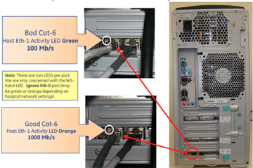
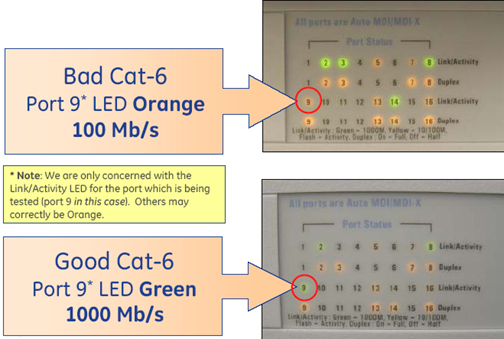
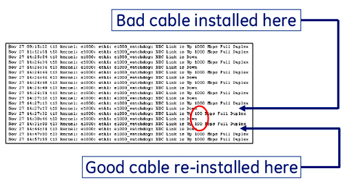
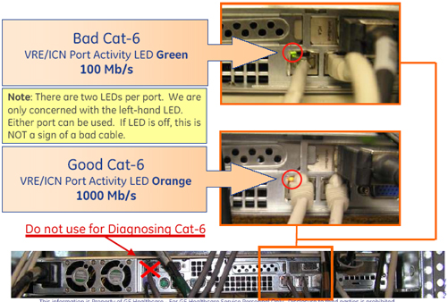
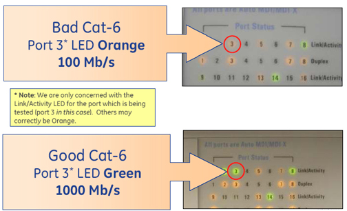
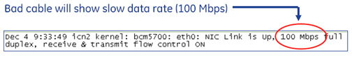

- 00000018WIA30706E20GYZ
- id_131063973.0
- Aug 29, 2019 1:33:37 AM
Cat-6 Troubleshooting
This guide can be used to the below issues, which may result from defective Cat-6 cables in the Systems Cabinet:
-
TPS reset hang-up.
-
Slow recon times.
-
Loss of connectivity between Host and Systems Cabinet.
-
For LONG Network Cable Between Host and Ethernet Switch (5160267-3): For LONG Network Cable Between Host and Ethernet Switch (5160267-3)
-
For short network cables between ICN/VRE to Ethernet Switch (5146974 & 5146974-2): For short network cables between ICN/VRE to Ethernet Switch (5146974 & 5146974-2)
For LONG Network Cable Between Host and Ethernet Switch (5160267-3)
-
Check port activity LED on Host: See Figure 1.
Figure 1. Host Ethernet Port Activity LED 
-
Green: 100Mb/s
-
Orange: 1Gb/s
-
-
Check data rate per Link/Activity LED on front panel of Ethernet switch, See Figure 2.
Figure 2. Ethernet Switch Indicator LEDs 
-
Test connection between Host and Switch:
-
Type in a command window: more /var/log/messages | grep “e1000: eth1: e1000_w”Enter
-
Look for “100” in log file, see Figure 3.
Figure 3. Eth-1 Data Rate Test 
-
For short network cables between ICN/VRE to Ethernet Switch (5146974 & 5146974-2)
-
Check port activity LED on VRE/ICN at port in question, see Figure 4.
Figure 4. VRE/ICN Ethernet Port Activity LED 
-
Green: 100Mb/s
-
Orange: 1Gb/s
-
-
Check data rate per Link/Activity LED for appropriate port on front panel of Ethernet switch, see Figure 5.
Figure 5. Ethernet Switch Indicator LEDs 
-
Test connection between Host and Switch
-
Telnet VRE (or ICN) and switch to root using “su –”
-
In command window type: more /var/log/messages | grep “NIC Link is U”Enter
-
Look for “100 Mbs” in log file, see Figure 6.
Figure 6. Look for “100 Mbs” In Log File 
-